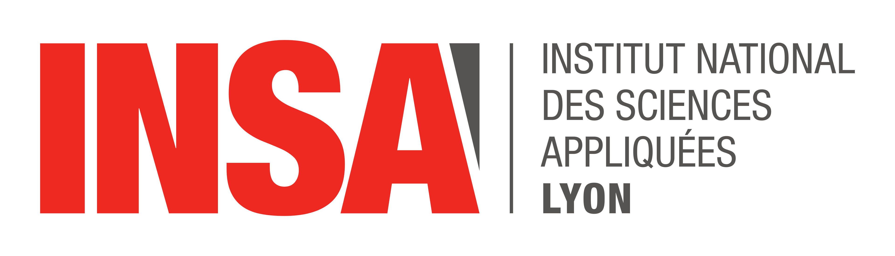

How to enjoy Lyon & ISMIS 2026
Venue & Access
The conference will take place on the campus scientifique LyonTech-La Doua, INSA Lyon, in the Claude Chappe auditorium.
The LyonTech-La Doua campus is served by three tram lines (T1, T4, and T6), providing easy access from different parts of the city.
The Claude Chappe auditorium is located in the Hedy Lamarr building, approximately a 5-minute walk from the tram stop “La Doua – Gaston Berger.”
Address
Hedy Lamarr Building – Claude Chappe Auditorium
6 Avenue des Arts
69100 Villeurbanne, France
How to get there
By Tram
Take tram line T1, T4, or T6 to the “La Doua – Gaston Berger” stop. The conference venue is a short walk from there.
By Car
If you are driving, you can use the following address for GPS navigation: 6 Avenue des Arts, 69100 Villeurbanne. Parking is available on campus, but we recommend using public transportation due to limited parking spaces.
About campus scientifique LyonTech-La Doua
Our partners
|
|

|
 |

|
|||
|
|
|
|
|
|||
|
||||||